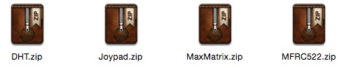
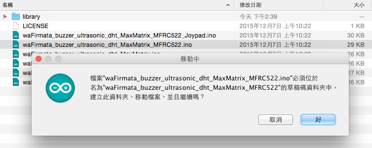
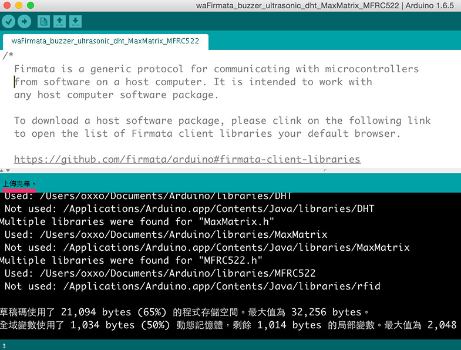
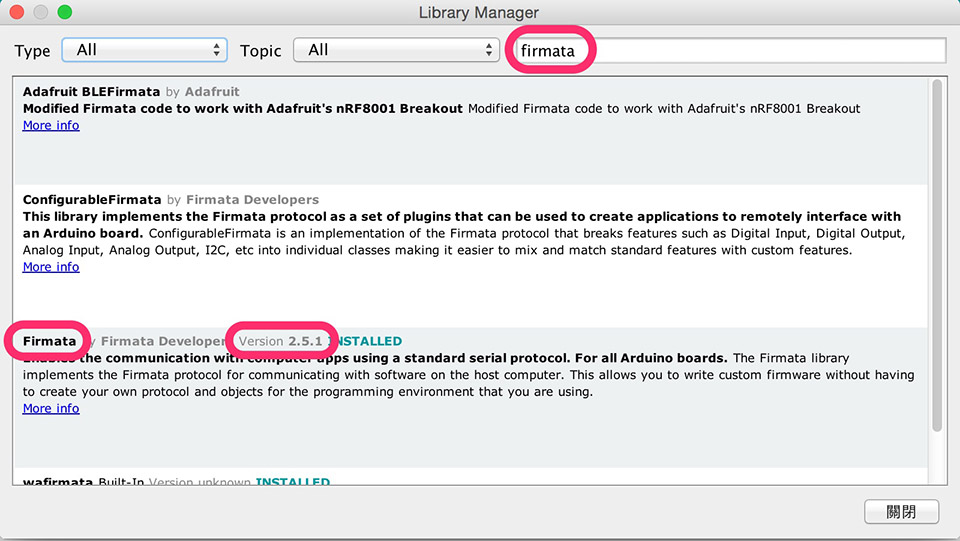

Arduino 韌體下載與燒錄
因為 Webduino 要走 Arduino Firmata 的通訊協定，所以必須「要燒錄具有 Firmata 通訊協定的韌體」，這篇文章將敘述基本的 Arduino 燒錄韌體教學，也會提供目前 Webduino 已經支援所有傳感器元件的韌體程式讓大家下載燒錄。
如果對於 Webduino FLY 雲端擴充板、序列埠或是藍芽有興趣的，可以參考這兩篇文章：
(1) Webduino Fly 初始化設定
(2) Chrome API Proxy 使用說明
燒錄注意事項
如果您燒錄時，UNO 上面有和 Webduino Fly 結合，請務必將 Webduino Fly 切換至 STA 模式，避免燒錄時出現無法燒錄的錯誤，如果您只有使用 Arduino UNO，直接透過 USB 現燒錄即可。

下載韌體與程式庫
我們已經把要燒錄在 Arduino 裡的韌體程式碼以及要引入的程式庫，公開於 Github 上頭，你可以直接 clone ，或是 fork 我們的這個開源專案，對於不會使用 Github 的朋友，可以直接點選「Clone or download」右邊的「Download Zip」的按鈕，或直接由這個下面的網址下載。
Github：https://github.com/webduinoio/wafirmata
Download：https://github.com/webduinoio/wafirmata/archive/master.zip

下載之後解壓縮檔案，就會看到待會會引入的程式庫和要燒錄的韌體檔。

引入程式庫 ( Include Library )
如果 Arduino 官方的程式庫沒有我們想要的元件，我們就必須要引入外部的程式庫，因為要燒錄 Arduino 韌體，所以要先安裝 Arduino 的 IDE ( 可以從 Arduino 官方網站下載 )，打開 Arduino IDE，從上方選單選擇「草稿碼」，接著選擇「Include Library」，選擇「Add .ZIP library」。

選擇剛剛解壓縮檔案內，把 Library 資料夾裡頭的 zip 檔案一一引入。

這些程式庫壓縮檔案分別是：
(1) DHT.zip：溫濕度傳感器
(2) Joypad.zip：搖桿
(3) MaxMatrix.zip：LED 點矩陣
(4) MFRC522.zip：RFID
(5) IRremote.zip：紅外線發射/接收 (6) G3.zip：空氣懸浮粒子 pm2.5 (7) wa_GY291.zip：三軸
燒錄韌體
有了這些程式庫之後，我們就可以打開 .ino 的韌體檔案來燒錄，直接在 .ino 檔案上頭點兩下就可以打開，通常第一次打開的時候會詢問你「必須位於...的草稿碼資料夾中...」，直接選擇「好」或「確認」即可。

打開 .ino 檔之後，將你的 Arduino 用 USB 線和電腦連接，確認序列埠已經連接上 ( 如果沒有出現在序列埠裡，最大的可能性是沒有正確安裝 Arduino UNO 的驅動程式 )

確認之後，點選「上傳」，就會開始將程式燒錄進 Arduino 內。

等待下方訊息出現「上傳完畢」，就表示已經燒錄完成，恭喜你，你已經可以開始使用 Webduino 的所有開發模式囉！

韌體清單簡介
目前 Webduino 公開釋出的 Arduino 韌體裡面包含了下列傳感器與電子元件 ( 只要檔名有包含，就是具有這個傳感器或電子零件，舉例來說：buzzer_ultrasonic 就包含蜂鳴器和超音波傳感器 )，之後會再陸續增加，也歡迎大家 Fork 我們的開源專案，一起來將 Webduino 的技術發揚光大！
(1) buzzer：蜂鳴器
(2) ultrasonic：超音波傳感器
(3) MaxMatrix：LED 點矩陣
(4) dht：溫濕度傳感器
(5) MFRC522：RFID
(6) Joypad：搖桿
(7) IR：紅外線發射/接收 (8) GPS：GPS (9) GY291：三軸偵測 (10) G3：空氣 PM2.5 偵測
Arduino IDE 1.6.7 編譯錯誤
最近發現某些使用者在使用 Arduino IDE 1.6.7 的版本會編譯錯誤，是因為升級後的 Arduino 並沒有提供向下相容，導致 Firmata 2.4.4 和 2.5.1 不相容而產生錯誤，解決的方法除了安裝回 1.6.6 或 1.6.5 的版本之外 ( 載點：https://www.arduino.cc/en/Main/OldSoftwareReleases#previous )，還可以使用以下的解決方式，把 Firmata 的版本轉回 2.4.4 或 2.4.3。
第一步，打開 Library Manager ( 草稿碼 -> include Library -> Library Manager )

第二步，搜尋 firmata，看看你的版本是不是跑到 2.5.1 了。

第三步，選擇 2.4.4 或 2.4.3 的 firmata 版本，按下 install，把 Firmata 裝回 2.4.4 的版本，如此一來，應該又可以順利的進行燒錄的動作了！

如果您還想了解更多，可以參考：
2. Blockly 教學：https://goo.gl/h6s7GY
3. 產品總覽：https://webduino.io/buy.html
4. 露天賣場：http://goo.gl/0Dj9ip